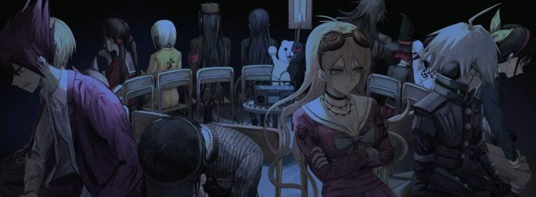

1- Protagonistas débiles que evolucionan: Ambos comienzan siendo inseguros, temerosos y sin confianza en sí mismos, pero desarrollan una gran determinación y liderazgo.
2- Tema central de la redención: Tanto Takemichi como Shuichi buscan corregir errores del pasado y redimirse ante sus fracasos.
3-Manipulación del tiempo o la memoria: Tokyo Revengers emplea viajes temporales; Danganronpa V3 altera recuerdos y percepciones para controlar a los personajes.
4- Ciclos narrativos repetitivos: Ambos relatos giran en torno a bucles de tragedia que se repiten hasta que el protagonista logra romperlos.
5- Desesperación frente a la esperanza: En ambas historias, los personajes luchan por mantener la esperanza en medio de la tragedia y el caos.
6- Muerte como elemento transformador: Las muertes no son gratuitas; impulsan el crecimiento del protagonista y redefinen las relaciones entre los personajes.
7- Relaciones de amistad y hermandad: Los vínculos emocionales entre los personajes son el motor principal de la historia.
8- Presencia de líderes carismáticos y ambiguos: Mikey y Kokichi cumplen roles similares como figuras admiradas, complejas y moralmente ambiguas.
9- Tensión entre libre albedrío y destino: Los protagonistas se enfrentan a sistemas que parecen controlar sus acciones y buscan afirmar su libertad.
10- Búsqueda constante de la verdad: Ambos investigan los eventos detrás de tragedias que parecen inevitables o manipuladas.
11- Ambientes cerrados y regidos por reglas violentas: Las pandillas de Tokyo Revengers y el juego de Monokuma en Danganronpa V3 comparten una estructura de poder jerárquico y cruel.
12- Dualidad moral de los personajes: Nadie es completamente bueno ni malo; cada personaje actúa bajo motivaciones personales complejas.
13- Sacrificio y dolor como crecimiento personal: El sufrimiento lleva a los protagonistas a madurar emocionalmente y asumir responsabilidades.
14- Crítica a la manipulación social y psicológica: En ambos mundos, existen figuras que controlan la información, la memoria y las emociones de los demás.
15- Importancia del pasado en la construcción del presente: Lo que ocurrió antes determina el curso actual de los hechos y la identidad de los personajes.
16- Transformación del protagonista en símbolo de esperanza: Takemichi y Shuichi se convierten en ejemplos de perseverancia y coraje para sus compañeros.
17- Ambas historias combinan tragedia con idealismo: A pesar de las muertes y el dolor, existe una fe constante en que el futuro puede mejorar.
18- Uso del misterio como eje narrativo: Las tramas se sostienen en la intriga por descubrir qué ocurrió realmente y quién es responsable.
19- Traiciones inesperada: Amigos o aliados terminan siendo enemigos o responsables de tragedias, alterando la confianza grupal.
20- Simbolismo del liderazgo: Se examina cómo la responsabilidad y el poder pueden corromper o destruir a quien los posee.
21- Protagonistas que asumen culpas ajenas: Takemichi y Shuichi cargan con la responsabilidad de salvar a todos, incluso cuando no es su deber.
22- Importancia del sacrificio por los demás: El altruismo extremo se presenta como una virtud y un peso para los protagonistas.
23- Tramas centradas en jóvenes enfrentando sistemas opresivos: Los personajes son adolescentes que deben desafiar estructuras de poder adultas o institucionales.
24- Constante tensión entre verdad y mentira: Las revelaciones cambian el significado de los hechos y muestran que la verdad nunca es absoluta.
25- Uso de la violencia como reflejo emocional: Las peleas o juicios simbolizan los conflictos internos y morales de los personajes.
26- Estructura coral de personajes: Ambos cuentan con grandes elencos donde cada miembro tiene una función narrativa específica.
27- Moralidad cuestionada: Se invita al espectador a reflexionar sobre lo que significa ser “bueno” en un entorno corrupto.
28- Cambio de perspectiva constante: Los protagonistas deben replantearse lo que creían sobre sus amigos, enemigos y sobre sí mismos.
29- Finales abiertos y filosóficos: Ambos desenlaces invitan a reflexionar sobre el ciclo del sufrimiento, la identidad y la libertad.
30- Exploración del valor de la vida: Tanto en las peleas de Tokyo Revengers como en los juicios de Danganronpa V3, la historia cuestiona qué significa realmente vivir y luchar por los demás.
Haz "click" allá arriba.
